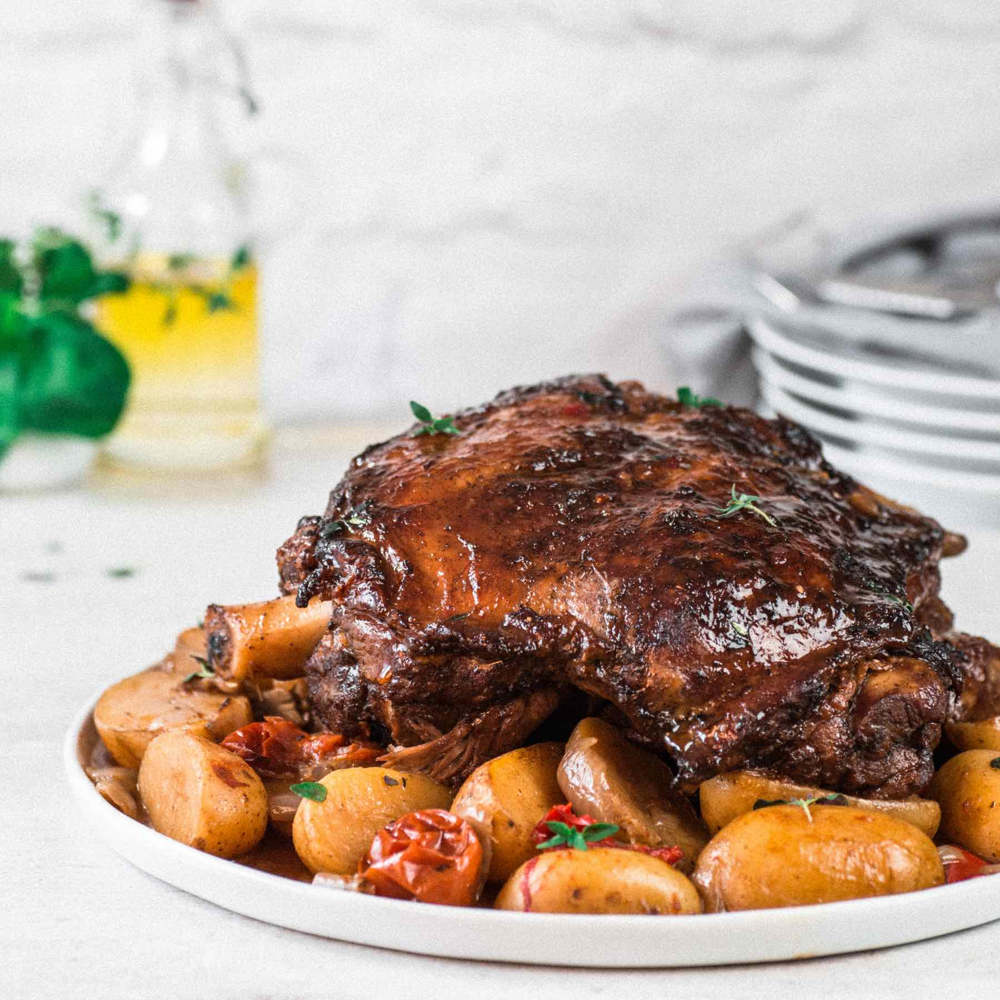
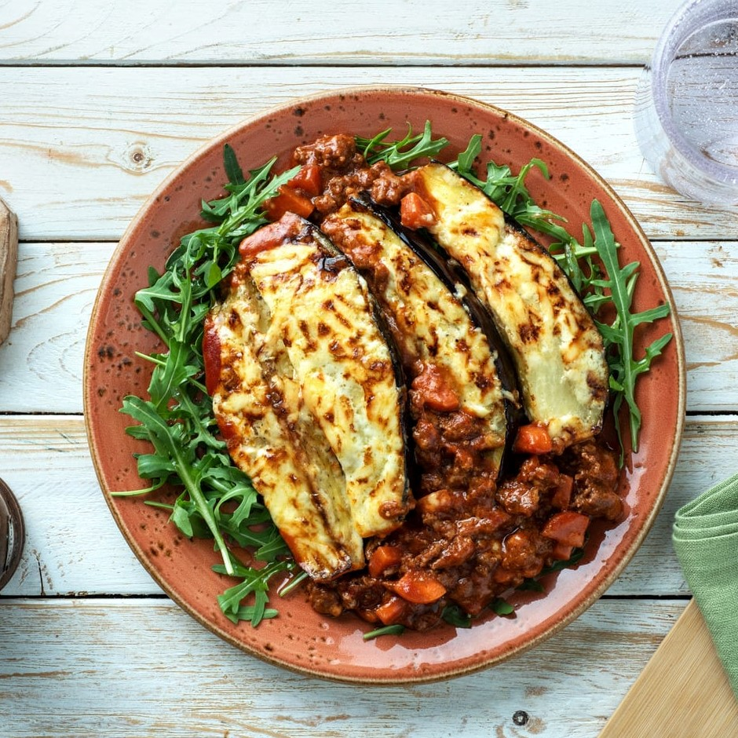
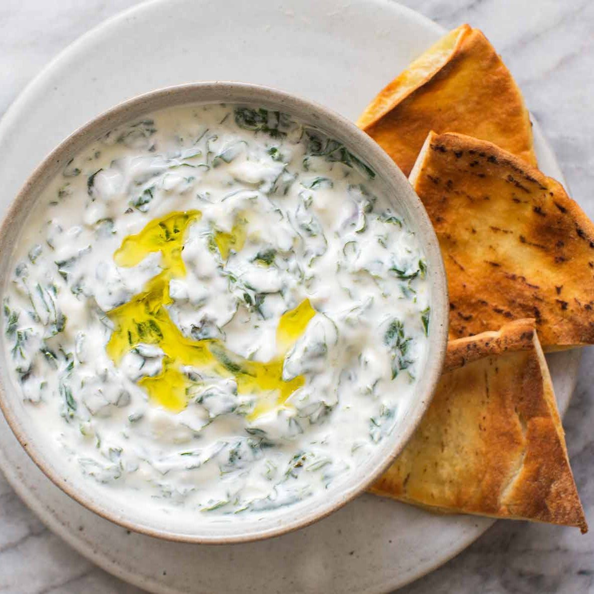

Briam is consists of zucchini, eggplant, and potato mixed with
tomato sauce and garnished with oregano. The vegetables
are flavored with garlic and onions, coated with olive oil,
and then baked to create a tasty Mediterranean flavored dish.
Choriatiki (Greek Salad)60 SAR
Choriatiki salad is made with cucumber,
olives, tomatoes, and a big piece of feta cheese.
Dolmades (Stuffed Grapevine Leaves)50 SAR
Dolmades are a great vegetarian dish that They are made
from tasty grapevine leaves that are stuffed with lemon-flavored rice,
fresh herbs, and spices. After being stuffed, they are rolled up and boiled until tender.
Fasolada (Greek Bean Soup) 45 SAR
Fasolada is simple and hearty white bean soup. it consists of beans,
crushed tomatoes, carrots, celery, and onion.
Gemista (Stuffed Veggies with Rice) 56 SAR
Gemista is a traditional recipe made with tomatoes and another
vegetables stuffed with
rice and various herbs. it baked, until soft and nicely browned.
Gigantes (Giant Beans) 45 SAR
Gigantes are giant beans baked in tomato
sauce and fresh herbs ,which give a unique taste.
Giouvetsi (Beef Stew with Orzo Pasta) 60 SAR
Giouvetsi is made with orzo pasta, onions, red wine, delicious tomato sauce, and beef.
Horta (Leafy Boiled Greens) 55 SAR
Horta consists of lightly-boiled leafy greens, including vleeta, chicory,
dandelion, or mustard, seasoned and served with lemon .

Kleftiko 50 SAR
Kleftiko is lamb cooked slowly with olive oil, lemon juice in earthen oven to trap smoke and heat.
Kolokithokeftedes 54 SAR
Kolokithokeftedes is balls consists of zucchini, fresh mint, feta cheese, and extra virgin olive oil.

Moussaka 50 SAR
Moussaka is a creamy delicious dish made of spiced beef cooked in tomato
sauce and then layered with fried eggplant and bechamel sauce.
Papoutsakia (Stuffed Eggplants) 50 SAR
Papoutsakia is stuffed eggplants that are first baked until soft
and then filled with a tomato-based meat sauce, topped with bechamel
sauce and cheese, and baked till they get a beautiful golden color.
Pastitsio (Greek lasagna) 55 SAR
Pastitsio is consists of baked layers of pasta, juicy minced beef, bechamel and tomato sauce,
topped melted cheese. The minced beef is cooked in a tomato sauce along with some spices.
Soutzoukakia (Greek Meatballs) 60 SAR
Soutzoukakia are sausages made from a mixture of ground pork and beef, cumin,
and olive oil which are cooked in a red wine sauce.
Stifado (Greek Beef Stew) 56 SAR
Stifado is a traditional Greek beef-stew cooked with tomatoes, onions,
cinnamon, vinegar or red wine, and a variety of spices and herbs.
Tirokroketes (Fried Cheese Balls) 55 SAR
Tirokroketes is balls made from a combination of various cheeses, graviera, feta, and gouda,
which is then mixed with bread crumbs before being fried.
Tomatokeftedes (Tomato Fritters) 50 SAR
Tomatokeftedes is a mixture of diced tomatoes, onions,
mint, herbs,and feta cheese. rolled into balls and fried in olive oil.

Tzatziki 56 SAR
Tzatziki is made of strained yogurt, garlic, cucumber, olive oil, fresh dill, and sometimes
lemon juice.
.jpg)
.jpg)
.jpg)
.jpg)
.jpg)
.jpg)
.jpeg)
.jpg)
.jpg)
.jpeg)
.jpg)
.jpg)
.jpg)
.jpg)
.jpg)